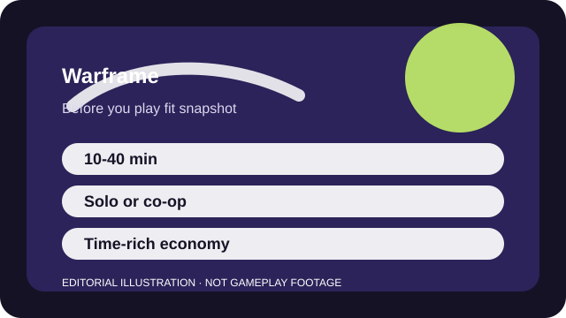

BEFORE YOU PLAY
What this page is and is not
This is a sourced editorial fit profile. It is designed to help with a yes-or-no play decision, and it does not claim a scored hands-on review.
The real fit question is whether you enjoy being handed a very long menu of future goals. Warframe becomes rewarding once you accept that the early game is about learning vocabulary as much as combat feel.
The first-session loop to judge is simple: Run missions, craft or rank new gear, and keep expanding the set of frames, weapons, and systems you understand.
Progression is long-term and account-wide: new frames, weapons, mods, star-chart nodes, and quest unlocks all layer together.

FIT SNAPSHOT
Warframe at a glance
| Genre | Cooperative action RPG |
|---|---|
| Platforms | PC, PlayStation, Xbox, Switch, Mobile |
| Business model | Free-to-play PvE action game with optional premium currency and convenience purchases. |
| Typical session | 10-40 minute missions, wrapped inside a much larger hobby-game structure. |
| Play style | fast co-op loot progression |
| Learning barrier | Warframe starts approachable in motion and becomes increasingly dense as mods, relics, open worlds, and currencies stack up. |
| Social shape | Warframe is comfortable solo or with drop-in co-op; a clan simply makes the larger system map easier to parse. |
WHO IT FITS
Best fit, likely friction, and the social reality
players who want an enormous co-op grind with fast movement and lots of build experimentation
players who need a tidy tutorial path or immediate clarity on every system
Warframe is comfortable solo or with drop-in co-op; a clan simply makes the larger system map easier to parse.
Progression is long-term and account-wide: new frames, weapons, mods, star-chart nodes, and quest unlocks all layer together.
FIRST SESSION PLAN
How to test the fit in one evening
- Finish the opening quest path and let the game teach the mission basics before chasing side systems.
- Use early platinum only after you understand whether inventory slots are the pressure point.
- Clear the next obvious star-chart nodes instead of bouncing between every new menu.
- Ask one specific system question at a time when you get confused instead of trying to decode the whole game at once.
Use the first session to answer these fit questions instead of judging rank, win rate, or store value immediately.
- Do you enjoy very long-term PvE progression more than clean onboarding?
- Can you tolerate learning a private vocabulary of mods, relics, and crafting over time?
- Will outside research feel like part of the hobby or an immediate turn-off?
TIME, COST, AND COMMITMENT
What you are really signing up for
| Session budget | 10-40 minute missions, wrapped inside a much larger hobby-game structure. |
|---|---|
| Social demand | Warframe is comfortable solo or with drop-in co-op; a clan simply makes the larger system map easier to parse. |
| Progression shape | Progression is long-term and account-wide: new frames, weapons, mods, star-chart nodes, and quest unlocks all layer together. |
| Spending pressure | Time can replace much spending, but premium currency and inventory convenience can tempt new players before they understand the economy. |
Short missions make Warframe easy to dip into, but understanding what to farm and when can still turn it into a serious hobby.
Time can replace much spending, but premium currency and inventory convenience can tempt new players before they understand the economy.
SOURCES AND LIMITS
What was checked, and what can change
- New quests, frames, and feature layers can alter recommended early priorities.
- Cross-save and cross-play support details can evolve by platform.
- Market pricing and convenience pressure are separate from the free core loop itself.
This profile uses official game pages and defensible general product knowledge to frame the player fit. It does not claim live testing across every platform, accessibility need, or current event rotation.